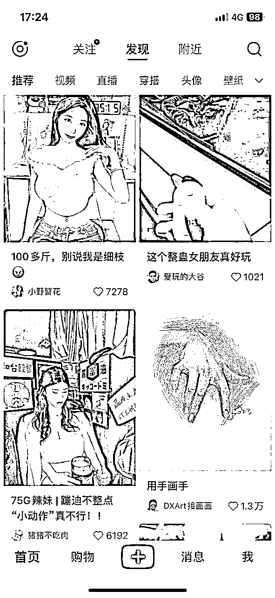
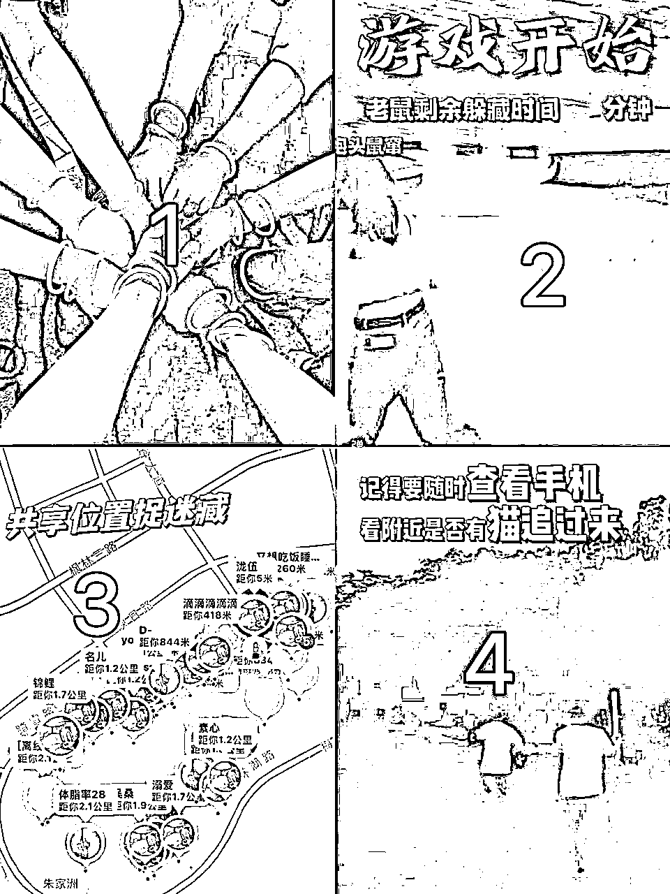
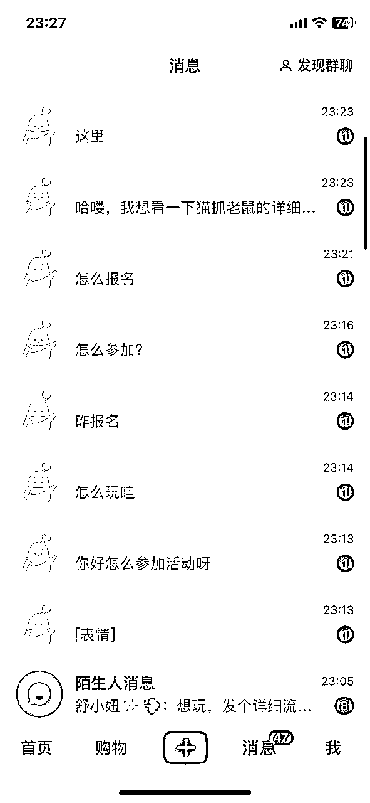
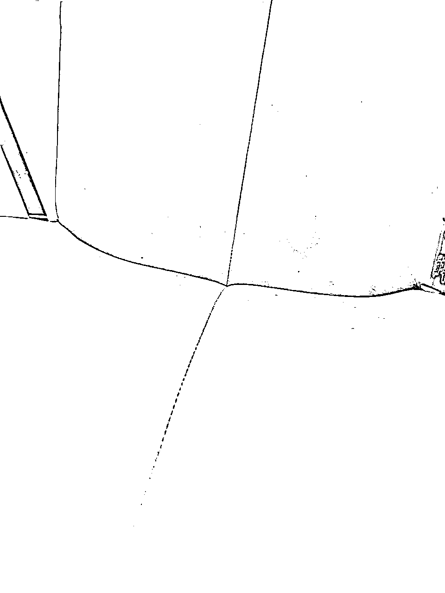
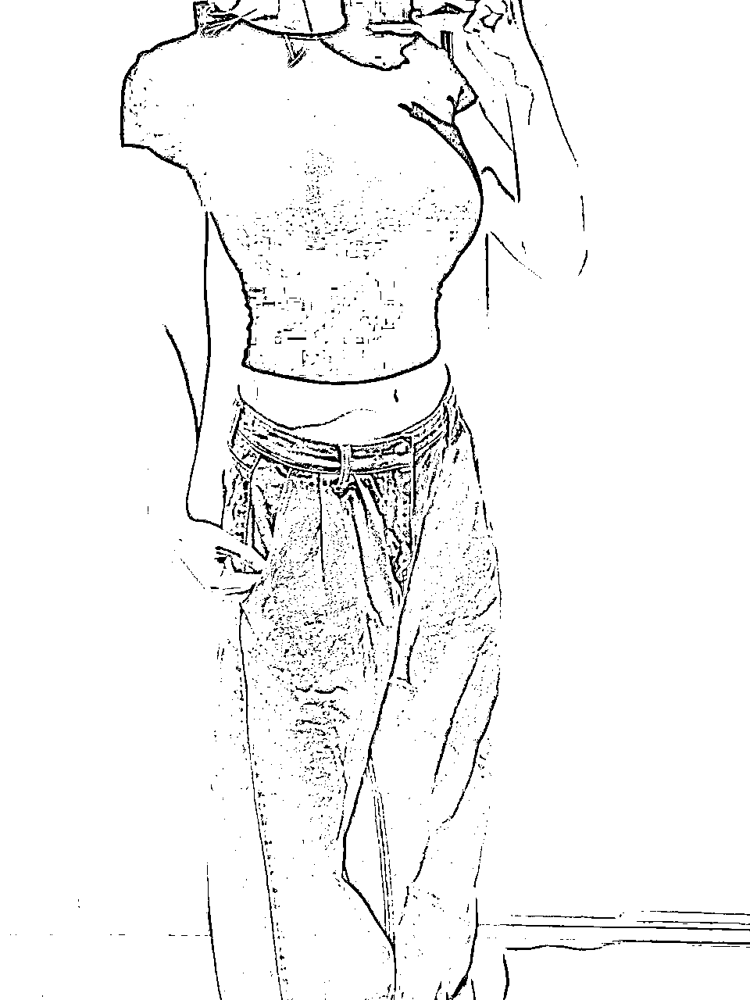
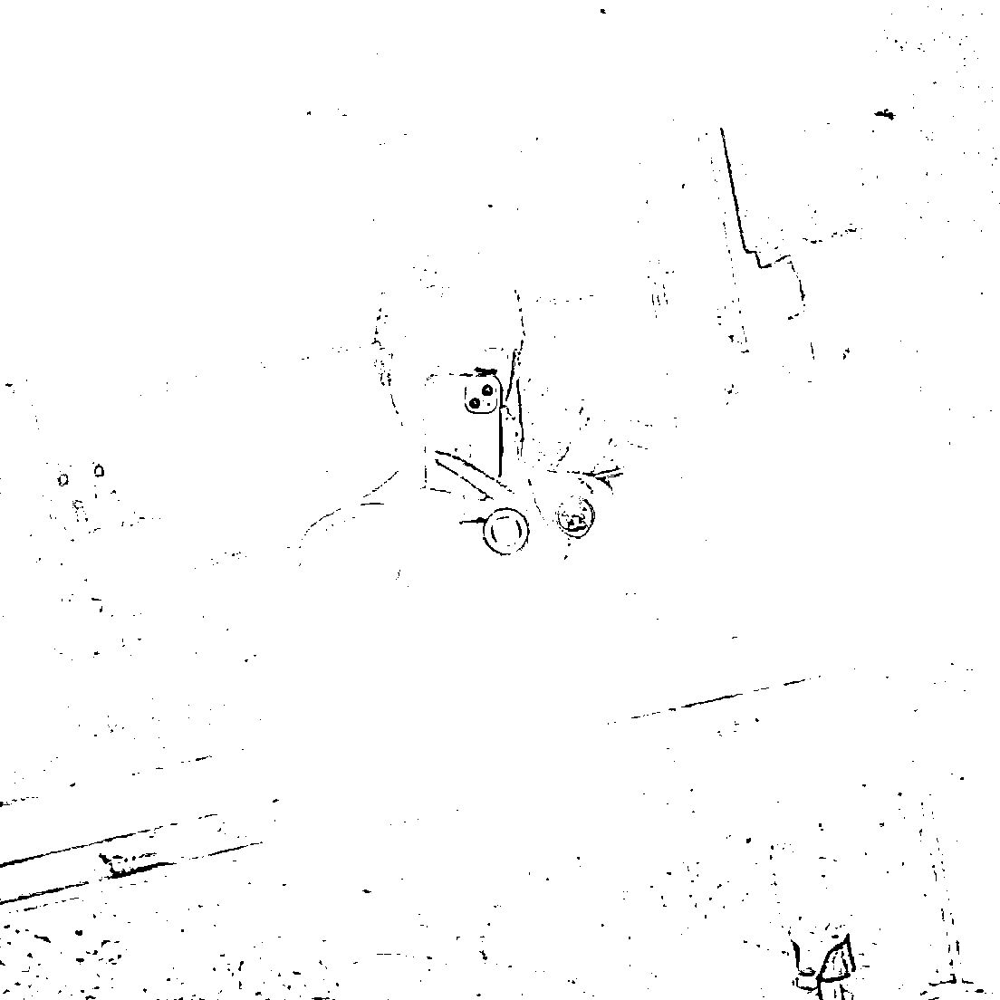
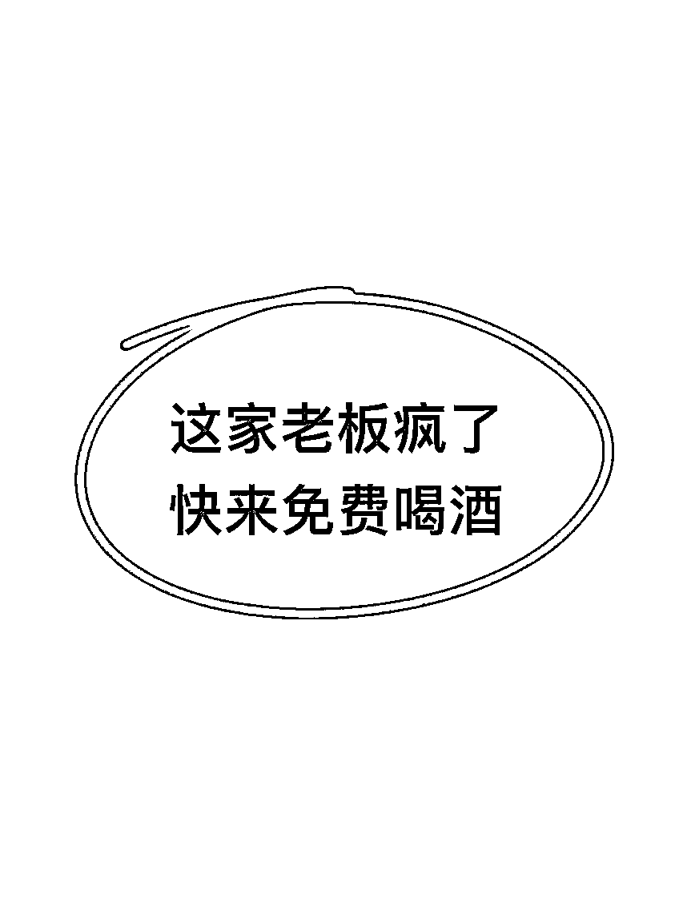

来源：https://nivut760ftk.feishu.cn/docx/C1ApdZKf7oJEsnxxWKac5ULenUe
大家好，我叫艾小飞，擅长小红书图文引流
是不是看到这个标题，你也很好奇的想点击进来看看艾小飞他将会写哪些有意思的干货内容对吧？
我也挺久没有写文章了，想来想去不知道要写什么样的题材
前两天有个粉丝来问我：飞哥，小红书的爆款底层逻辑是什么？
这一下把我给问懵了，我不知道是该从哪跟他说起
于是我去公众号搜了一圈，发现很多博主都是说些比较片面的干货知识，看完后给我感觉很空、很泛，很难让我们借鉴去落地实操
当时我停顿的想了想，小红书的流量密码到底是什么？他们之间有什么样的共性？能不能让我的读者通过案例就能理解清楚？
我看过太多的小红书爆款标题和封面的案例了，我发现他们背后都会有一个共性，那就是非常擅长拿捏人性
凡是拿捏了人性中的某个点，那么他的这篇流量肯定不会低到哪去
所以从今天开始，我每周都会更新一篇关于小红书流量密码的人性系列篇
带你们从人性的角度，去解读他们爆款背后的秘密，同时也会根据我自身操作过的项目，来给你们做案例参考
也许还有少部分人没有感受到拿捏了人性是种什么体验
你看看下面这张图片，如果你是个路人，你的第一反应会是什么

可能你会觉得低俗划走，也可能你会好奇想点进去看看
但数据给了他们最直接的答案，你看看他们的笔记点赞，都破了千！
这些数据的背后，代表的是他们轻松拿捏了人性中的色欲
不要认为说一提到色欲就觉得很羞耻，很低俗，这就是我们人性中不可缺少的一部分
很多商家还利用人性中的色欲，给自己产品和业务上带来了非常多的精准客户
小红书的流量密码始终都离不开人性的，所以今天就给大家来深度的聊聊，小红书爆款博主是如何通过色欲来获取更多流量密码的，我们该如何去借鉴和复制？有哪些参考的案例？
在这里，给大家举个我在九月初，实操了猫捉老鼠同城游戏的案例，给你们看看我是如何通过人性中的色欲，让我在短时间内积累大量的精准用户的，而且还都是免费流量！
先给你们科普一下什么是猫捉老鼠
简单一句话总结就是：共享位置，成年人的躲猫猫

这个活动是年轻人的游戏，所以当时我一发出去之后，一小时就引来了100+的评论数，全都是来报名的，为什么我的流量会爆得那么快呢？
就是因为我的标题中添加了这么一句：“快来！超多女生的柳州猫捉老鼠游戏，明晚开局！
就单单凭这么一句标题，评论区全是lsp在回复：“怎么报名”，“在哪报名”，“我也要去”

短短一个小时，私信都爆了，全是主动找上门的精准客户
我的第一波种子客户就这样给积累起来了，你说我去哪找来那么多女生的，哈哈其实我也是瞎编的，先把人给吸引过来再说
为了能平衡男女参加同城游戏的人数比例，于是我又用了同样的套路，标题写的是：快来！超多高颜值男生的柳州猫捉老鼠游戏，明晚开局！”
也就是凭着这一句标题，短时间内马上吸引了一大波同城的女生来评论：“怎么参加”，“怎么报名”。“男的有没有腹肌”，“有多帅”。哈哈哈
因为那个帐号我早已经注销了，所以就没有数据给你们展示，后来引来围观的人越来越多，评论越来越多，以至于我根本就承接不住那么多的流量了
虽然说这个项目后面因为精力有限没有办成，但我在不费任何投流的情况下，靠拿捏他们的色欲，就能吸引大量主动来找我付费的人
而且我还很轻松，一天就能把群给引满了，这就是我玩小红书流量的底层逻辑
其实我之前给你们分享的那些爆款封面和标题，大部分都是基于人性为底层去展开的
再说说我的另一个项目案例
在八月初的时候，小红书平台突然宣布要开始打压无货源店铺了，也就是说从那个时候开始，我的主业务基本上是走不下去了
当时我为了找到出路，就想尝试另外一种玩法：小红书笔记带货
这个玩法相对当时来说还是比较新的，很少人去做，而且门槛还挺高的
小红书笔记带货它有个最大的门槛，那就是在无违规的情况下，粉丝量要达到1000以上，才可以申请报名笔记带货
别小看这一点，单单是这点已经是难倒了80%的人了，我也是为这点想破了很多的办法
最后我也是利用了人性中的色欲，在3天内快速从0粉涨到1000粉，无违规还完成了门槛任务，相当于间接给我省了几百块买账号的费用
当时我是怎么做的呢？
当时我想到的是，想要快速涨粉，擦边是个很好的题材
比如我会搬运二创这样的素材



不露脸的软擦边，配上软暧昧的标题，不但不违规，还能吸引一大波lsp过来围观
这样的素材，能给他们带来一种遐想的空间，但要把控好这个尺度，尺度过大就很容易被封
所以当时发了大概有十五篇左右，我的关注列表一下子就蹭蹭蹭的轻松破千了，速度非常的快，让我顺利的迈过了这道门槛，开始操盘项目的赚钱之路
这就是我利用了人性中的色欲，轻松撬动了小红书的流量，也给我省掉了很多不必要的成本和精力
对我来说，色欲是整个小红书流量密码占比最大的一块，基本上男男女女都离不开这一点
当你们下次再去刷小红书推荐页的时候，可以留意下哪些笔记题材，他们是借用了色欲这块去做的笔记，然后再看看他们的数据都是怎么样的，你发现会有惊喜的
说完了我之前的项目案例，那可能你会问：飞哥，我一个新人要如何利用你说的是色欲，来给我赚些零花钱呢？
好的，这里举个我徒弟之前实操过的案例，看看他是怎么通过这点去日赚3k的
当时他在九月份注册了两个小红书女号，一个大号用来发帖，一个小号用来导流
发的是什么内容呢？
他就发类似免费吃瓜的搭子群，然后配上一张软擦边的图片素材，底下瞬间就吸引了非常多男生女生的评论：“求拉”，“我要进”，“快拉我”
然后我那徒弟就把评论的这些人全部都导流到小号上，小号上发有QQ群的联系方式，然后在QQ群里发夸克APP的吃瓜链接，那个链接内存故意做得很大，不充会员看不了的那种，于是很多人宁愿都充会员都想去看到底是什么瓜
你猜他是怎么赚到钱的？
他的赚钱模式很简单，不收用户的费用，只靠APP拉新赚佣金
不单单是赚到了夸克拉新的佣金，还能赚到开会员的佣金，两边都可赚，高峰期一天都能赚到3k，过后我问他累不累，他说有什么累的，全都是半自动躺赚的
好，你想想，他这个项目能成功的秘诀是什么？
是不是拿捏了人性中的偷窥+贪婪+色欲的心理，一步步的把他们引到私域上，然后再引到他们去操作为自己赚钱的？
色欲就像诱惑的面包，等他饿了，自己会主动想来找你要吃的
你看看他们全程都是主动去评论，主动去加QQ群，主动去下载软件的，我徒弟前期只需要发发帖就行了
所以千万不要小看人性中的色欲，随便套在一个项目上，都能给你带来意想不到的利润
但有一点，别碰法律底线！这是基本的要求！
好，要是你还不懂怎么利用人性的色欲，我再给你举个我自己操盘线下酒吧流量的案例，靠人性中的色欲，给流量惨淡的酒吧在半个月内就能带来翻倍的业绩
在我们柳州这座三线城市，有一个开业很久但却一直没什么人气的小酒吧
可能是老板看到生意一天不如一天，也开始急起来了吧，他就通过朋友推荐来找到我，希望能给他们酒吧出些引流的方案和运营技巧
把价钱谈妥了后，我去他门店观察，发现酒吧坐标位置不怎么行，酒水价格一般般，装修也很普通，门前还没有停车位
这些都是他的不太好的劣势，怎么办呢？
于是我想到了一招，借用高颜值女生来引流
酒吧的消费主力军基本上都是男生占比的多，男生喜欢去酒吧有其中一个点，那就是高颜值女生多。
我也去逛了同行的酒吧一圈，好像没几家是靠高颜值女生来引流的
然后我就跟老板商量，问他近期能不能搞一个活动：
刚开始他挺不乐意的，觉得这样做太亏了，我说你要是不搞搞活动，我是很难帮你引流的，因为你很多环节对比同行来说都没什么优势的
他想了想觉得也有道理，要是再没流量，估计下个月连员工的工资都发不出了，他决定这次死马当活马医了
当得到了老板的授权和布局后，我就马上给他注册了两个小红书帐号
A帐号主要是为了吸引同城女生过来免费喝酒
B账号主要是为了吸引同城男生过来消费喝酒
在这里先暂时，你思考下，我为什么要让老板做这样的活动？
好，待会给到你答案，我们继续
首先第一步，当时我是怎么去发帖吸引同城的女生过来体验的呢
我标题是这么写的：“柳州这家酒吧疯了，他居然敢请所有女生喝酒！”
然后配上这张封面

当时发出去半个小时后都还没数据反馈，我还以为靠这种起不到什么作用，完了完了，出师不利啊，有点丢脸了
没想到有了第一个用户评论后，后面就一发不可收拾，评论区全都是：“在哪报名”，“快报位置”，“我要去”
第一条笔记马上把同城的女生都给吸引过来了，哈哈我当时把数据截图发给老板看，他还不太相信这是真的
既然女生这边已经出效果了，那下一步就是要去吸引消费主力军男生了
我当时怎么发的呢？
我还是套用刚刚那个文案模板，标题写的是：“柳州这家酒吧女生居然比男人还多”，然后配上一张封面
当时这一发出去，第一时间来的都是女生@自己男友来看的
当时这个操作让我有点搞不懂了，但底下都是来求问地址和问消费详情的
私信当时也被问爆了，于是我就把他们一步步的引导到店里，第二天来的都是情侣和男生消费的
借用这套打法，我给他操盘12天后，流量和业绩都比之前的翻了倍，看到酒吧人气慢慢给衬托起来了，自己也有很强的成就感
你们看看，我就是把产品套在人性最软弱的色欲上，就能给酒吧带来非常多的精准客户，不单单给老板带来了收入，还能给这家店带来了更多的曝光
要是你的产品没流量，能不能也借用我这样的打法呢？
通过这个案例，我不知道你能学到了哪些知识点，但不可否认的是，只要万物套上了人性中的色欲，就能让你的产品轻松带来更多的流量，人性的魅力就是这么的大
回想一下你之前看过的那些文章里，博主跟你们讲的爆款封面和标题，是不是都基于人性的角度去展开设计的
再看看你们之前爆过的笔记中，有没有基于人性当中的某个点去展开的，要是有，那说明你的方向是对的，要是没有，不妨可以借用我的这套方法去试试
小红书流量密码人性系列之色欲篇的内容，也差不多讲完了，如果你希望我帮你在产品或业务上，做一些流量上突破的话，也可以后台来找我聊聊，我会根据你的情况，来给你设定一个专属的引流方案
那么下一篇，我会给大家分享贪婪篇，为什么“免费”会有超强的诱惑力？为什么你老是控制不住自己下单？我们如何借用贪婪给我带来更多的业绩？下一篇我都会给你解开这些谜底
好了，今天的分享内容就到这里了，我叫艾小飞，谢谢大家
原创：艾小飞
转载可私信
禁止搬运和抄袭
微信：aifei9977（记得备注来意）